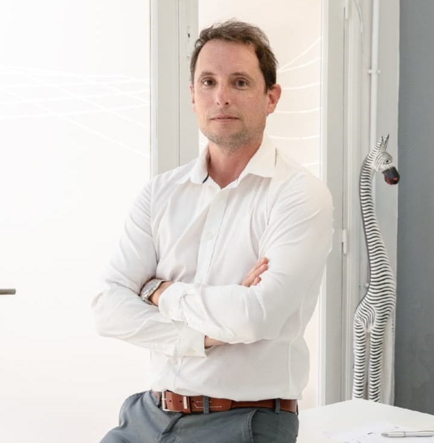
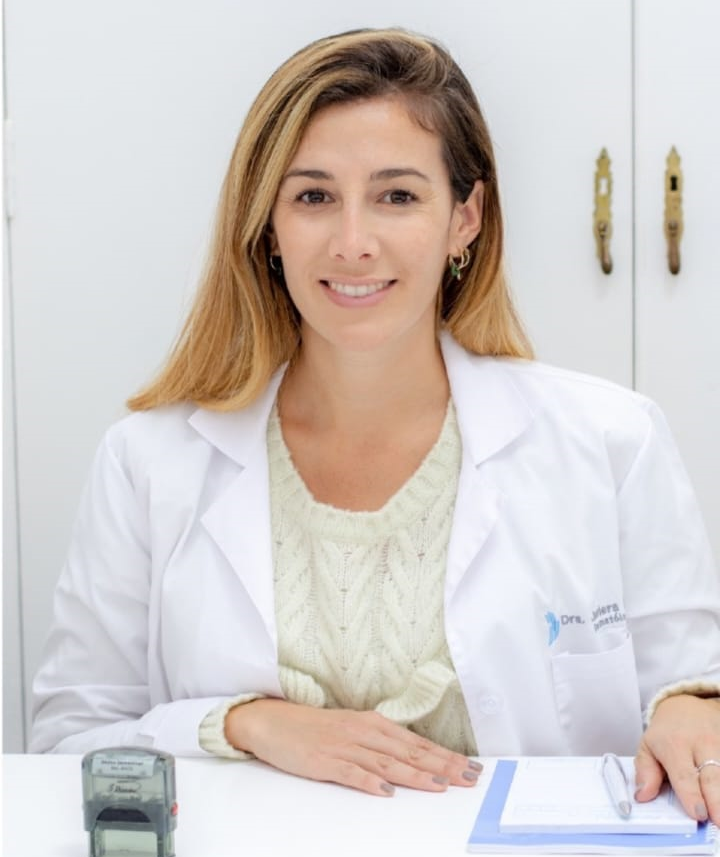
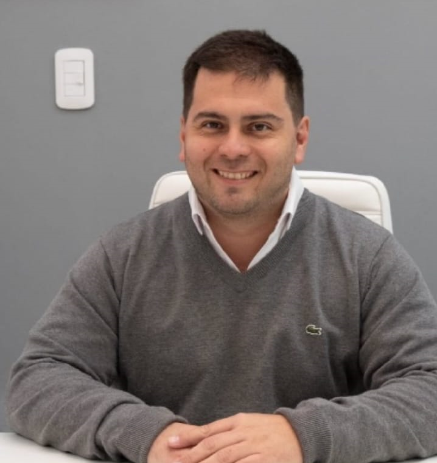
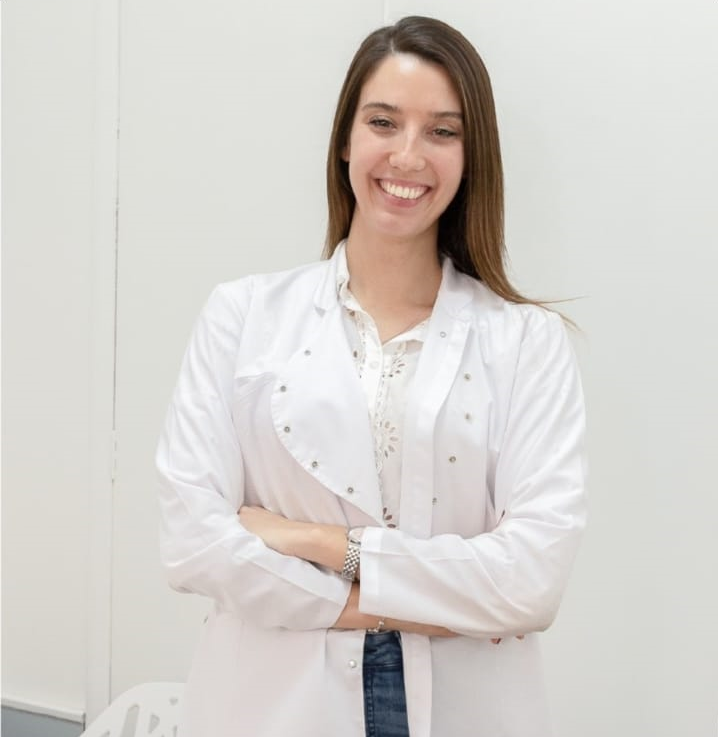

CONOCÉ MÁS DE NOSOTROS
Nuestro espacio
Somos una estética ubicada en la ciudad de Rosario, provincia de Santa Fe, que surgió en el año 2021 cuando se liberaron las restricciones de la conocida pandemia del momento. Luego de enfrentar miles de problemas relacionados a la situación sanitaria, pudimos abrir nuestras puertas para ayudar a aquellas personas que deseaban generar un cambio personal.
Brindamos distintos tratamientos, con aparatología propia de primeras marcas en el mercado mundial, con el respaldo de profesionales abocados a la medicina estética.
Continuamente nos encontramos en el compromiso de buscar las herramientas más innovadoras y eficientes para poder ofrecerles lo mejor a nuestros pacientes.
Nuestros integrantes
|  | Dr. Joel Ortiz | Especialista en dermatología clínica y estética |
|  | Dra. Lucia Baez | Especialista en cirugía plástica, estética y reparadora |
|  | Lic. Juan Flitz | Especialista en tratamientos corporales |
|  | Lic. Emilia Ruiz | Especialista en aparatología corporal |